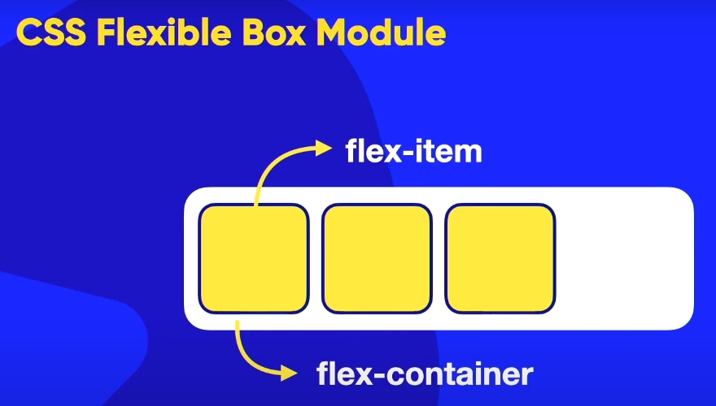
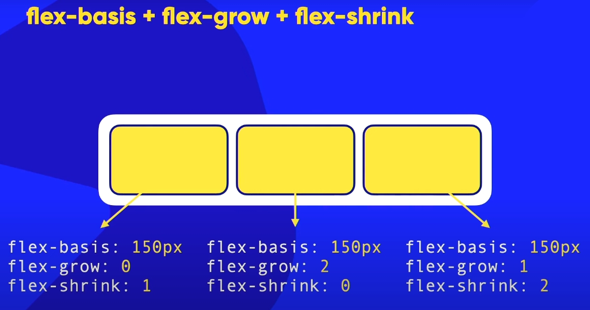
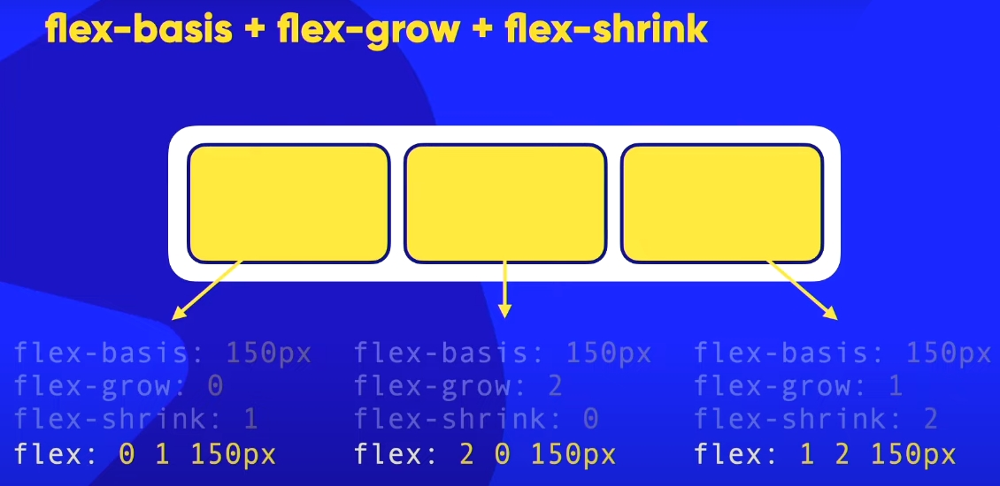
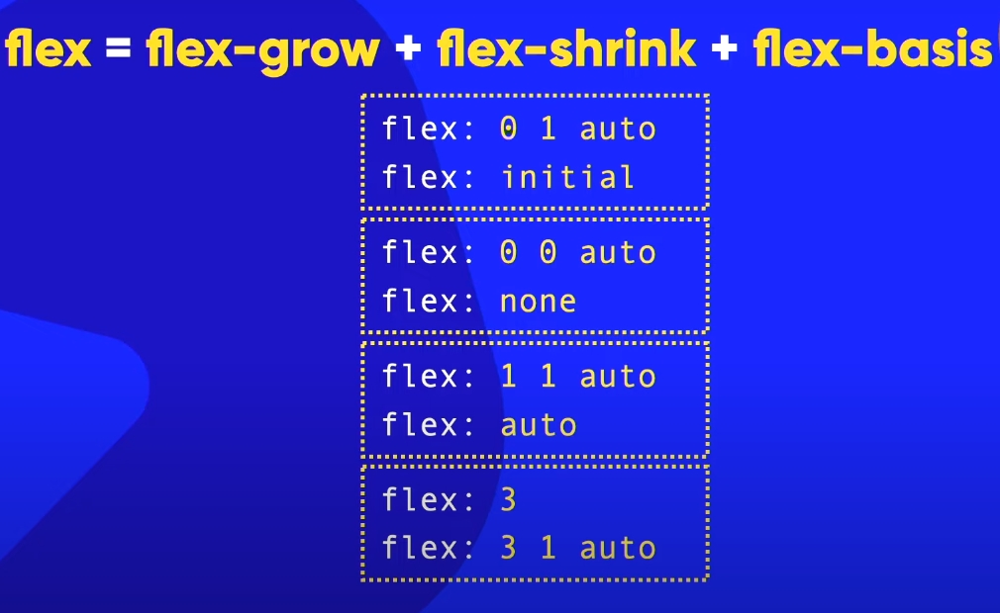

AULA 12
OBSERVAÇÃO:
"Altere a dimensão do navegador para ver o comportamento dos elementos mediante as configurações feitas durante a aula".
propriedade flex: ;
Podemos definir os valores de "flex-grow"; "flex-shrink" e de "flex-bass" ao mesmo tempo em uma propriedade que única, chamada de {shorthando} para diferentes /flex-itens, usando seletores para (class) ou (id) e atribuindo a propriedade individualmente.
Qual é o comportamento dos flex-itens em relação a isto?
A ilustração abaixo exemplifica a aplicação da propriedade nos elementos-filhos e a mostra a maneira como vai se comportar mediante aumento ou diminuição do contêiner.
imagem 1
Entenda quem é contêiner e quem é itens.

imagem 2
Entenda quem é contêiner e quem é itens.

imagem 3
Aplicação da propriedades aos itens individualmente.

imagem 4
Atribuindo a propriedade [flex] com os três(3) valores, aos itens individualmente.

imagem 5
simplificando a propriedade [flex] com os três(3) valores.
imagem 6
simplificando a propriedade [flex] com os três(3) valores.

Entendendo mais sobre os valores na propriedade [flex]:
1- /flex = /flex-grow + "flex-shirink" + {flex-basis}
#PADRÃO
2- /flex: 0 1 auto; = É o mesmo que não atribuir NADA, é o PADRÃO.
[Podemos não declarar os valores acima, ou se houver dúvida tem alguma configuração que vai sobrepor os valores: ENTÃO usamos o valor = initial como vemos abaixo].
3- /flex: initial; = /flex: 0 1 auto; = PADRÃO.
# NADA FLEXÍVEL
4- /flex: 0 0 auto; = É o mesmo que deixar os itens não flexíveis.
Fazendo assim os itens não podem crescer, não podem diminuir e o tamanho vai depender do tamanho do conteúdo.
5- /flex: none; = Segue a mesma lógica do /flex: 0 0 auto; que vimos na opção 4.
# MÁXIMA FLEXIBILDADE
6- /flex: 1 1 auto; = É o contrário do anterior(flex: 0 0 auto;),.
Com isso dizemos que o elemento vai crescer a vontade, diminuir a vontade o elemento, e o limite de aumetar e diminuir vai ser o tamanho natural do conteúdo.
Podemos dizer que isso é o máximo de flexibilidade que um flex-item pode ter.
7- /flex-auto; = A lógica da configuração anterior (flex: 1 1 auto;).
8- /flex: 3; = Assim determinamos o valor para /flex-grow
já o "flex-shirink" + {flex-basis} ficam padronizados.
9- /flex: 3 1 auto; = A lógica anterior que é = /flex: 3;
EXEMPLO 1
1- Aqui configuramos o flex-contêiner com display = flex; flex-flow = row nowrap;
2- Definimos [id] para cada flex-item receber diferentes configurações.
3- Para os flex-itens definimos o flex-basis = valor indiviual ; flex-shrink = valor individual e flex-grow = valor individual;
Mas para simplificar o uso das propriedades [flex-grow + flex-shrink + flex-basis; Nesta aula usamos a maneira simplicada das propriedades em forma de ShortHand chamada "flex: ;".